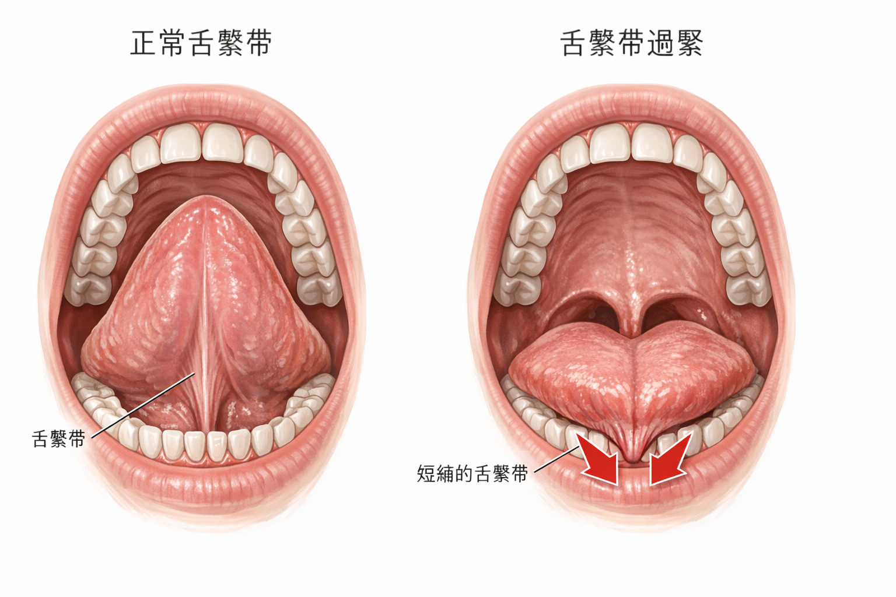
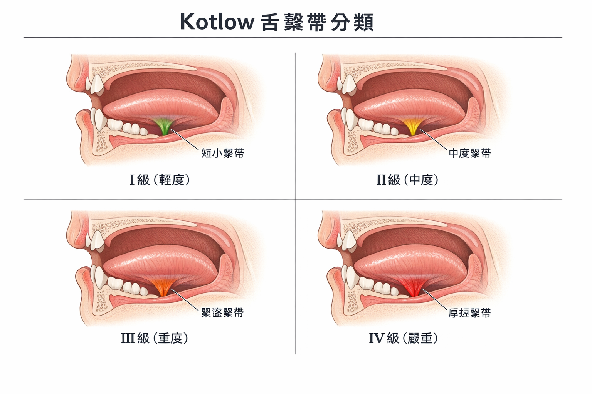

🎬 你可能有這樣的印象
「舌繫帶？那不是嬰兒哺乳的問題嗎？做個小手術剪一下就好了。」
這是很多人的認知——但研究告訴我們，這只說了一小部分。
舌繫帶沾黏讓舌頭無法自由活動，特別是無法完整地頂上上顎。這個限制，從嬰兒期的哺乳困難，一路影響到兒童的說話、吞嚥、顎骨發育，再到成人的氣道空間和睡眠品質。這是一個一輩子的問題，不是只有嬰兒期才需要關心的。
🎥 相關學術簡報
本主題的學術簡報
以下簡報由趙哲暘醫師整理，資料來源為同儕審查學術文獻，歡迎線上觀看或分享。
🎨 AI 視覺圖卡
圖解：你的舌頭動得到嗎？
以下圖卡由 AI 根據學術文獻自動繪製，用視覺化方式呈現舌繫帶的分類與影響。
👅
舌繫帶視覺說明圖卡
4 張 AI 插圖圖卡 · 解剖分類與 OMT 治療流程 · 中文版
點擊開啟圖卡 →
▲ 點擊開啟 Gamma 互動圖卡 ｜ 資料來源：學術文獻整理，趙哲暘醫師審訂
🖼 醫學解說圖
舌繫帶：視覺化關鍵說明
以下解說圖由 GPT Image 1.5 依據學術文獻繪製，呈現舌繫帶解剖與分類。


圖像由 GPT Image 1.5 生成 ｜ 趙哲暘醫師審訂 ｜ 資料來源：同儕審查學術文獻
📖 基本觀念
舌繫帶是什麼？
舌繫帶（frenulum）是連接舌頭底部和口腔底部的一條薄薄的纖維組織。正常的舌繫帶讓舌頭可以自由活動、上抬、左右伸展。
當舌繫帶太短、太厚、附著位置太靠前，就形成「舌繫帶沾黏（ankyloglossia）」——俗稱「大舌頭」或「舌頭被綁住」。
| 功能 | 正常舌繫帶 | 舌繫帶沾黏 |
|---|---|---|
| 舌頭上抬 | 舌尖可以碰到硬腭 | 舌尖上抬受限，甚至無法碰到上顎 |
| 吞嚥時舌頭位置 | 舌體貼合上顎，往後推送食物 | 無法完整貼合，吞嚥效率差，代償動作多 |
| 休息時舌頭位置 | 舌頭自然貼著上顎（撐開上顎） | 舌頭低位，上顎失去撐開力，發育變窄 |
| 發音 | 舌頭音（ㄌ、ㄖ、ㄗ等）流利 | 特定音節不清楚，說話費力 |
| 氣道支撐 | 睡眠中舌頭有足夠肌力維持氣道 | 氣道支撐減弱，OSA 風險增加 |
📊 數字說話
舌繫帶沾黏和 OSA 的關係，有多強？
3.05倍
舌繫帶沾黏者有 OSA 的風險比（Camañes-Gonzalvo et al. 2024 meta-analysis）
12.3倍
合併高窄上顎時，OSA 風險更高達 12.3 倍
1.53倍
大型研究（n=3,535,879）顯示 RR=1.53（O'Connor-Reina et al. 2025）
5.02倍
另一項研究（n=135）OR=5.02（Brożek-Mądry et al. 2021）
這些數字來自不同規模的研究，但方向一致：舌繫帶沾黏顯著增加 OSA 風險
🔬 為什麼？
舌繫帶怎麼影響睡眠呼吸？
這需要了解舌頭在睡眠中的角色：
根源
舌繫帶太短，舌頭無法完整上抬
舌頭被綁住，無法自由移動到上顎位置
↓
1
休息時舌頭習慣低位
上顎失去舌頭的撐開力 → 上顎發育偏窄、偏高（高拱形上顎）
↓
2
上顎窄 → 鼻腔空間縮小 → 口呼吸
上顎與鼻腔底部共用空間，上顎窄等於鼻腔也窄
↓
3
睡眠中舌頭支撐氣道的能力下降
健康的舌頭需要上抬來支撐口咽氣道；舌繫帶限制這個動作
↓
4
氣道塌陷風險增加 → OSA
特別是仰躺時，舌頭往後墜，堵住氣道——睡眠呼吸中止
🌐 全面影響
舌繫帶沾黏影響的，遠不只睡眠
👶 新生兒：哺乳困難
- • 無法有效含乳，吸吮不深
- • 媽媽乳頭疼痛、乳腺炎
- • 寶寶體重增加不理想
- • 哺乳時吞入大量空氣，脹氣
🗣 幼兒期：語言發展
- • 舌頭音（ㄌ、ㄖ、ㄗ、ㄊ）發音困難
- • 說話費力，說長句子時更明顯
- • 可能被誤認為「懶得說話」
🦷 兒童期：顎骨和牙齒
- • 上顎窄（高拱形），牙齒擁擠
- • 逆吞嚥：無法正常吞嚥，代償動作
- • 口呼吸：臉型偏長、鼻塞
- • 矯正治療後容易復發
😴 成人：睡眠和氣道
- • OSA（睡眠呼吸中止）風險顯著上升
- • 打鼾、睡眠品質差
- • 下巴、頸部肌肉緊繃
- • 咀嚼效率偏低
💊 治療選項
手術就夠了嗎？
舌繫帶剪開（frenotomy 或 frenuloplasty）只是第一步，不是全部。
⚠️ 重要：手術 + OMT 才是完整治療
研究顯示，手術單獨做，效果不完整——因為舌頭在長年受限的情況下，已經發展出各種代償動作（逆吞嚥、低舌位、不良吞嚥模式）。
如果手術後不做 OMT（口顎肌功能治療），這些代償習慣不會自動消失，舌頭也不會自動學會正確使用。
最佳結果：術前 OMT 評估 → 手術 → 術後持續 OMT 訓練。病例報告顯示，frenotomy + OMT 後 AHI（睡眠呼吸中止指數）改善達 94%。
| 治療方式 | 效果 | 說明 |
|---|---|---|
| 手術只做（frenotomy） | 部分改善 | 解除物理限制，但代償習慣不會自動消失 |
| OMT 只做（不手術） | 有限改善 | 若舌繫帶真的太短，再努力練也受物理限制 |
| 手術 + OMT（術前 + 術後） | 最佳效果 | 解除限制 + 重新訓練正確功能，AHI 改善可達 94% |
三句話總結
- 舌繫帶沾黏不只是嬰兒哺乳問題——它讓舌頭無法上抬到上顎，影響吞嚥、顎骨發育、呼吸，一路延伸到成人睡眠。
- 最新研究（n=3,535,879）顯示，舌繫帶沾黏者有 OSA 的風險是正常人的 1.5–5 倍；合併高窄上顎時更高達 12 倍。
- 治療需要手術 + OMT 的組合，光剪舌繫帶不夠——訓練舌頭重新使用才是關鍵。
「舌繫帶沾黏不只是哺乳問題，
它影響你一輩子的睡眠。」
它影響你一輩子的睡眠。」
── 來自 Camañes-Gonzalvo et al. 2024；O'Connor-Reina et al. 2025
🧪 舌頭功能自我檢查
我的舌頭有受限嗎？
試試以下幾個動作，感受一下你的舌頭活動度。
🪞 方法：試試這些動作
- 動作 1：舌尖碰上顎——嘴巴張開，舌尖能否碰到上顎最前方的硬腭？（正常應該可以）
- 動作 2：舌頭伸出——舌頭伸出來，舌尖是否尖的、能超過下唇外緣？還是圓鈍的、幾乎出不來？
- 動作 3：舌頭往上捲——舌尖能往上碰到上門牙後方嗎？（ㄌ的發音位置）
- 動作 4：吞口水時——吞嚥時你的嘴唇或下巴需要很用力嗎？這可能是代償動作的跡象。
📝 問卷：你有這些情況嗎？
1. 舌頭無法碰到上顎，或伸出來時形狀是心形/圓鈍的
2. 嬰兒時期曾有哺乳困難（媽媽覺得很痛、或寶寶體重增加慢）
3. 說某些音（ㄌ、ㄖ、ㄊ等）不清楚，或說話時感覺舌頭打結
4. 牙醫或矯正科醫師曾提過上顎偏窄，或有高拱形上顎
5. 有睡眠呼吸問題（打鼾、OSA、睡眠品質差）
6. 吞嚥時嘴唇、下巴或臉頰會明顯用力
❓ 常見疑問
關於舌繫帶的疑問
孩子已經大了，舌繫帶還需要處理嗎？+
需要！雖然嬰兒期的哺乳問題已經過去，但舌頭的限制對顎骨發育、吞嚥模式、氣道支撐的影響會持續。特別是如果孩子有上顎窄、逆吞嚥、口呼吸、或睡眠問題，舌繫帶的評估和處理仍然很重要。成人也一樣——如果有 OSA 合併舌頭活動度受限，舌繫帶治療可能是整體治療計畫的一部分。
手術會很痛嗎？孩子能接受嗎？+
現代的舌繫帶手術（frenotomy）通常用雷射或剪刀，嬰兒可以局部麻醉或不麻醉快速完成（幾秒鐘），大孩子和成人使用局部麻醉。術後通常不需要住院，恢復期 3–7 天。雷射手術出血很少，感染風險低。多數家長反映孩子術後幾分鐘就恢復平靜，比想像中輕鬆。
我怎麼知道自己有舌繫帶沾黏？+
最準確的方式是讓有經驗的牙醫、兒科醫師、語言治療師或 OMT 治療師用 Kotlow 分類或 Hazelbaker 量表做評估。自我初步判斷：舌頭伸出來時尖端是否呈心形或方形（正常是尖的）、舌尖是否能碰到上顎、說舌頭音是否困難。有疑問就去評估——這是個很容易確認的問題。
剪了以後，一定要做 OMT 嗎？+
強烈建議。手術解除了物理限制，但舌頭已經習慣了受限的移動方式，不會自動重新學正確功能。特別是如果已經有逆吞嚥習慣、低舌頭姿勢，這些都需要透過 OMT 訓練來重建。多項研究顯示，手術 + OMT 的組合，比單獨手術的效果好得多，OSA 相關指標改善也更顯著。
要去哪裡評估舌繫帶？+
可以去找：兒童牙科醫師（評估口腔結構和功能）、語言治療師或口顎肌功能治療師（評估吞嚥和舌頭功能）、兒科醫師（嬰兒期哺乳評估）、口腔外科或一般牙科（手術本身）。理想上，先做功能評估，確認確實有功能影響，再考慮手術，而不是「看起來很短就剪」。
📥 學術文件下載
本章學術整理文件
本頁所有數據均來自以下學術整理文件。歡迎下載完整版本，包含論文引用、量化數據與完整研究說明。
🔗 延伸閱讀